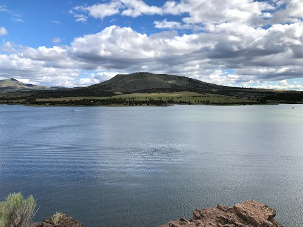
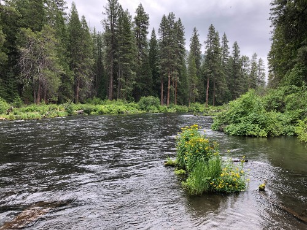

Looking across Haystack Reservoir, Oregon.

The Metolius River near Camp Sherman, Oregon.


This page contains music and art that I've made. The Music section has embedded Soundcloud players for each playlist that I've made. The playlists are organized by year; each year's playlist contains the songs that were made in that year. The art section contains photos that I've taken. I don't have many drawings to share, however, the artwork of this website is an example of digital art that I've made.
2017 Playlist
2018 Playlist
2019 Playlist
2020 Playlist
2022 Playlist